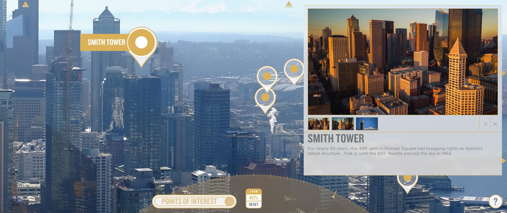
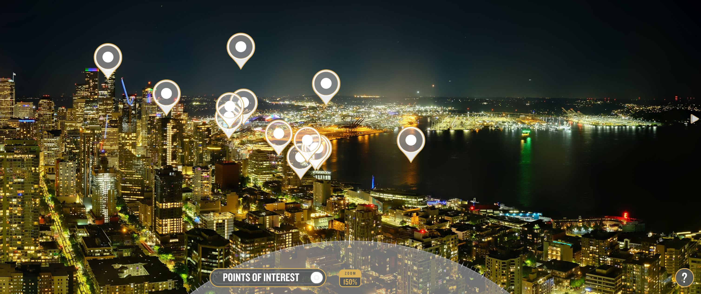
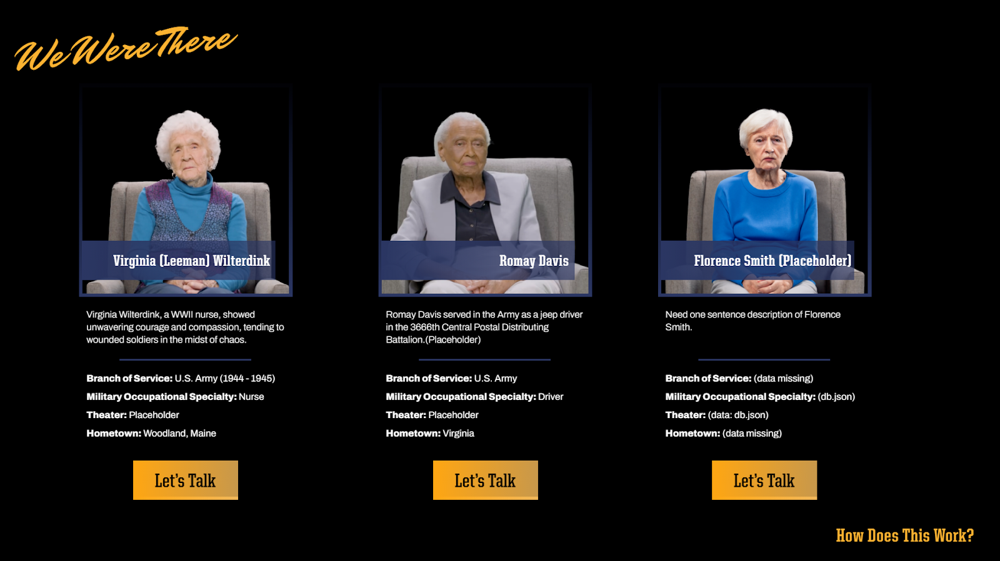
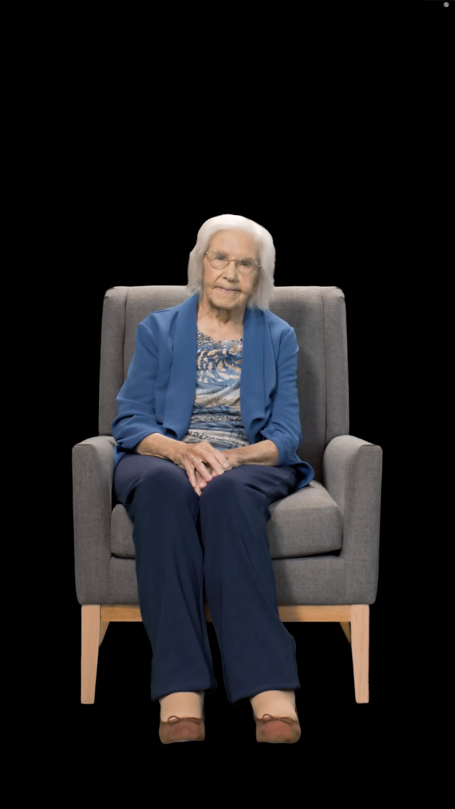
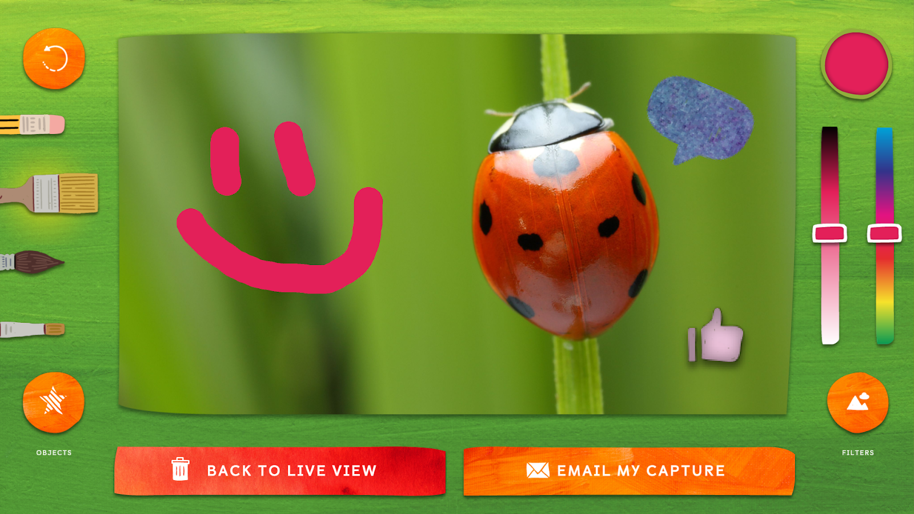
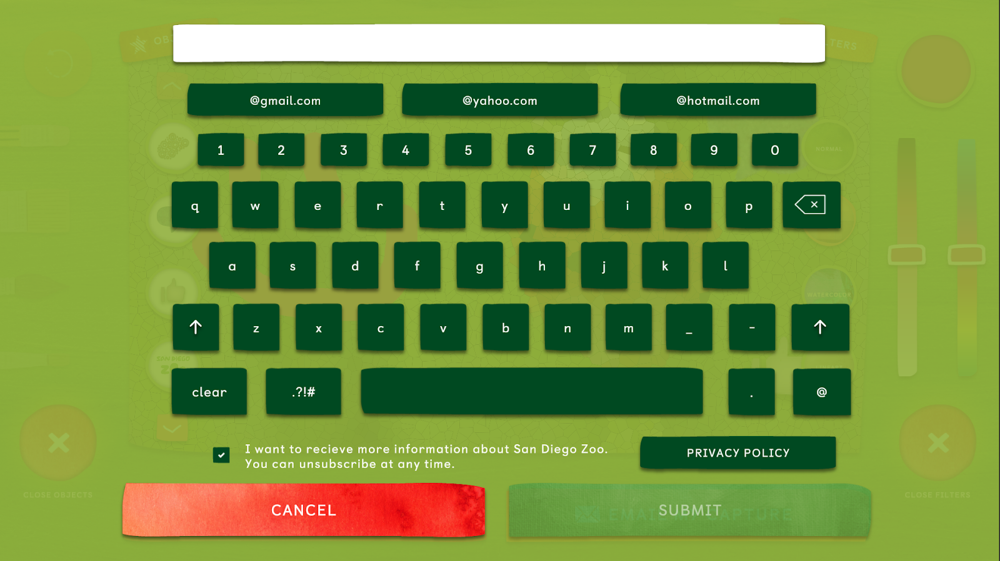
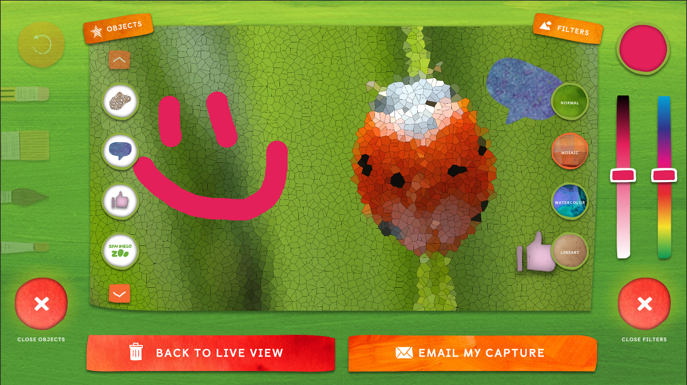
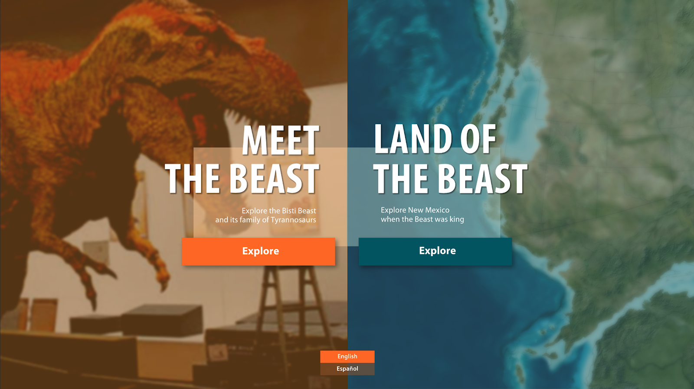
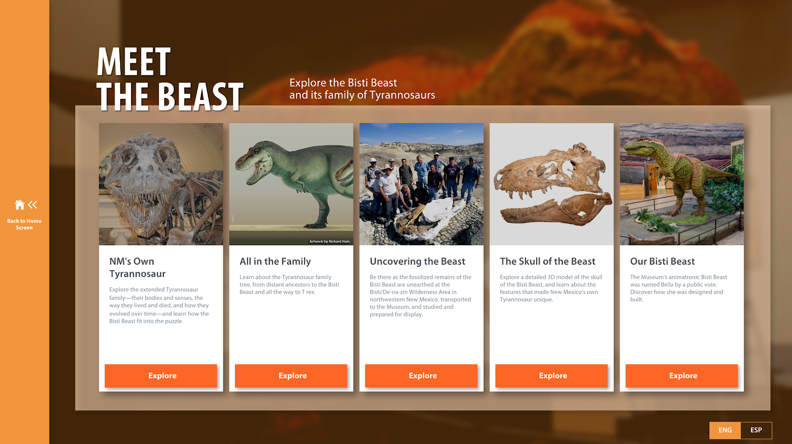
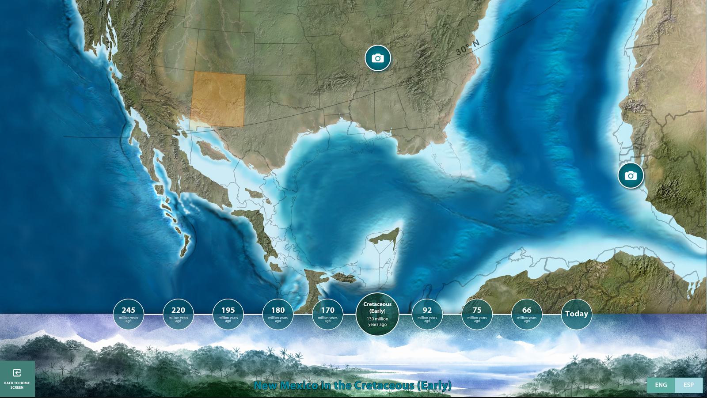

Go Home
View Resume
All of the following works have been programmed by myself, unless otherwise specified (latest projects at the top).
Space Needle
The Seattle Space Needle commissioned us to make them an application that could sit at the top of the Space Needle and help users identify local landmarks and businesses. The application consists of a frontend and AWS hosted backend CMS that lets Space Needle staff add hotspots to a high definition image of the city. An outdoor rated camera, mounted at the top of the Space Needle, sends live stream data to the kiosk and refreshes the image of the city every 10 minutes or so.
- 2023 - 24, Unity, C#, Bolin Outdoor Camera, Directus CMS


Voices from the Front & Our War Too
I worked with our web developer and Storyfile API to create an AI experience for the National World War II Museum that featured life-sized retired veterans. Users can select the veteran which they’d like to talk to, and then ask them questions about their experiences.
- 2023 - 2024, Unity, C#, React.js, Vuplex, color-changing microphones


Chelan County PUD
Created a 3x3 touch wall experience for a utilities company in Chelan Washington to teach people about the different types of rebates they could apply for, whilst being eye catching and a representation of the town itself. This application included many moving parts, animations, and logic to change the UI based on the seasons.
- 2023, Unity, C#

Click to play video!
Da Vinci Science Center
Myself and one other talented developer created a large-scale application for the Da Vinci Science Center where users can use one of the nine touch table kiosks to take a selfie, complete the specific activity (making a self portrait / make a flying machine / create a fit kid), and then send their “creation” to the 50 x 60 foot projected screen to see their creation integrated into a larger than life 3D scene.
Apps also included a locally hosted content management system (written using Directus CMS) and two side projected walls that show “Profiles in Creativity” as well as the program schedule. All applications had to be networked together in order to sync correctly and share content between the screens.
- 2022 - 2024, Unity, C#, Netcode

Click to play video! Video credit: Ideum
Verizon POC
Commissioned by Verizon to create a proof of concept system for their main offices in New Jersey. This included a backend database of verizon plans, phones, accessories, and deals that were then loaded into the application at runtime and allowed users to create their own perfect plan. We worked on two different versions with two different design teams.
- 2023, Unity, C#
Unity Asset Package: 3D Book
A Unity Package created by me that started out as an R&D project and turned into a really cool 3D book application. Using a cone deformation algorithm, a 3D mesh deforms over time and makes it look like a page in a book being flipped. The pages are externally loaded allowing for users to generate their own flip books with as much customization as possible.
- 2022, Unity, C#, shaders (hlsl)

Click to play video!
Valle de Oro National Wildlife Refuge: A Refuge Story (1/5)
- 2021-22, Unity, C#, Audio Accessibility Layer

Click to play video!
San Diego Zoo Applications
- 2021, Unity, C#, Arduino, SMTP
There were about 6 different software applications that we were hired to make for the San Diego Zoo’s new bugarium in 2021, and I made 2 of them: the Microscope Station and the Conservation Quiz.
The microscope station consisted of a usb connected microscope, a push button, and a touch screen. Children would pick a specimen, place it under the microscope, then use the push button to take a picture of it.

That picture would show up in the software and would allow the kids to draw on it, place stickers, and add filters. They could then email it to themselves.


JCC Donor Wall
The Jewish Community Center wanted to replace their existing donor wall with a newer, more high-tech option, so we made them a digital interactive with an externalized CMS so they can add / remove / keep track of donors going forward.
The design was inspired by the Tree of Life, and each donor name gets added to a leaf on the tree. All of the content is dynamic, so if one donor has an image and a story to tell, they can input those and they will change the scale and layout of the UI elements on screen. In the opposite case, if a donor has nothing but their name and the amount donated, the UI will scale down, making sure it doesn’t seem empty.
- 2021, Unity, C#, Google Sheets API

Click to play video!
California Science Center: Life Beginnings!
- 2020, Unity, C#

Click to play video!
Austin Condos Real Estate App
A touch wall application made for a realty company in Austin, Texas, used for selling $$$ condos in a building that didn’t yet exist.
We were provided with a 3D Model of the building and some renderings of what it should look like. The rest was essentially up to us to make it look realistic and to include the correct information about the available condos.
Features included: a quiz to help find the right condo for the buyer, 180 degree panorama views from each condo, a localized CMS so that the realtor could mark a condo as “pending” or “sold” (opened by using a 3-finger hold over the Linden logo).
- 2020, Unity, C#, 3D models, lighting

Click to play video!
Altoona Historical Viewer
The Altoona, Iowa Historical Viewer was created for the Altoona, Iowa Historial Society so that they could post about upcoming events, show pictures of founders, leaders, and the community, as well as view a map of the area and mark interesting places to visit.
- 2020, Unity, C#

Click to play video!
Bisti Beast
- 2019, Unity, C#
The Bisti Beast application was built for the New Mexico Museum of Natural History after archeologists discovered fossils of a new type of T-Rex, that they later named the Bisti Beast.
I worked closely with an archeologist / geologist to gather the content / text / images / videos for the application.



Synagogues 360
An immersive experience application written for the Sherwin Miller Museum of Jewish Art (located in Tulsa, Oklahoma) when a very talented photographer and donor Louis Davidson became ill and needed a way to memorialize his 360 panorama images of Synagogues from all over the world.
This application features over 600 panormas that can be explored by location or by theme, and then is presented on a secondary monitor so that many users can gather around the table and view the synagogues together.
- 2019, Unity, C#

Click to play video!
Colonial Williamsburg
Pair programmed with a coworker for the Colonial Willaimsburg onsite museum. Contains collections of maps and prints that have been digitized so that users can view items up close, as well as items that aren’t on display.
- 2019, Unity, C#

Click to play video!
African Art
A touch table application made for the National Smithsonian Museum of African American History and Culture in Washington, D.C. This application was programmed by myself and another developer. We broke it up into 2 pieces: the animated map background and the user interactable UI.
I was in charge of programming the UI, image loading, and general animations.
- 2019, Unity, C#

Click to play video!

Click to play video! Video credit: Ideum
Electromagnetic Spectrum Object Viewer
A touch table application built to let users look at different objects in different wavelengths. By dragging your object along the screen horizontally, the item is revealed in the 4-7 wavelengths and are accompanied by short descriptions.
This was originally written in Flash, but when Flash was no longer supported, I was tasked with making a Unity remake. I made a 4k version which includes 4 wavelengths, an 8k version which includes all 7 wavlengths, and a touch wall version that displays in one direction, rather than top and bottom.
I have also made this version in English, Spanish, German, and Arabic with the use of TextMeshPro.
- 2018 to current, Unity, C#, shaders (hlsl)

Click to play video!